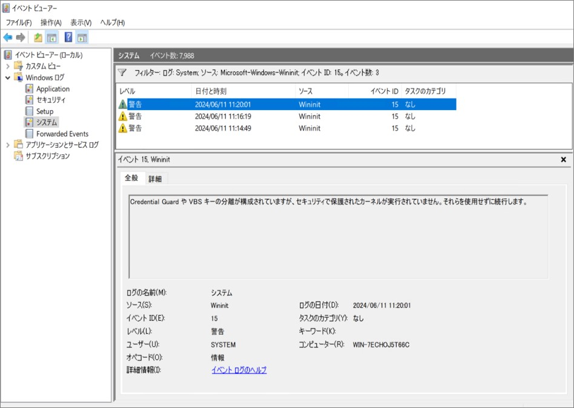
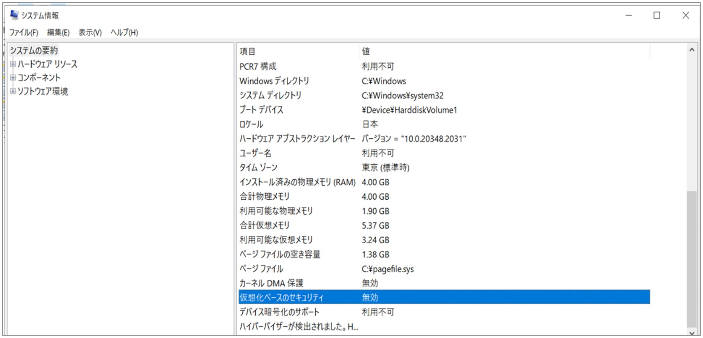
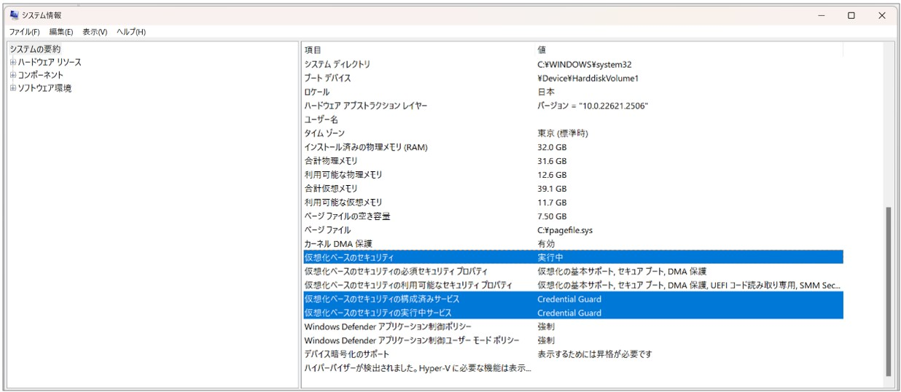
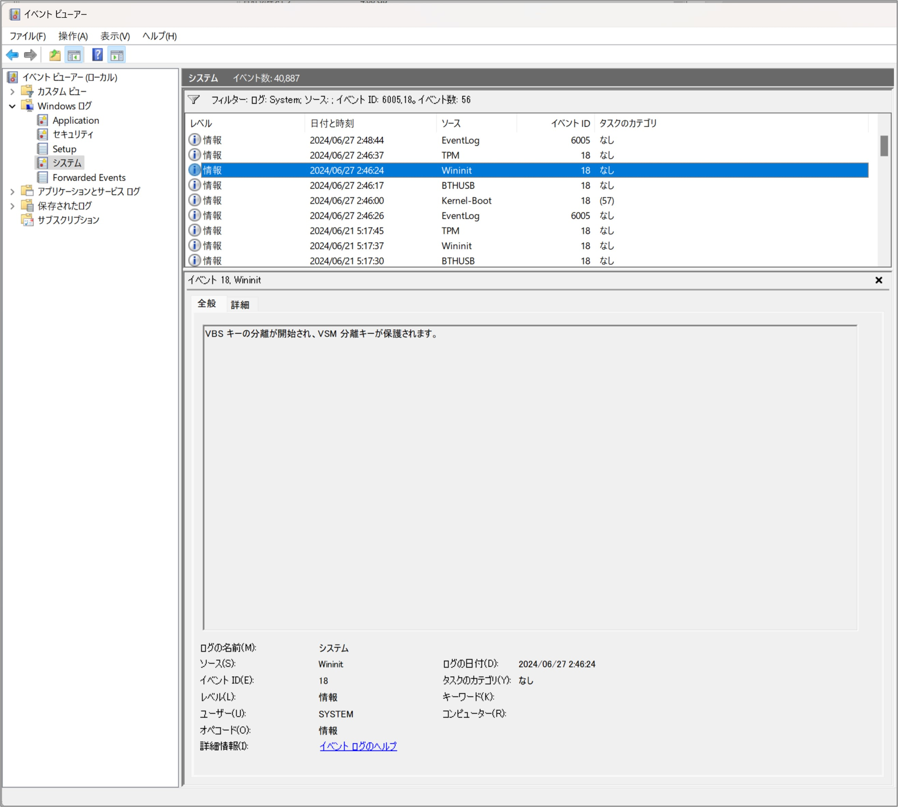

本記事はマイクロソフト社員によって公開されております。
こんにちは。Windows Commercial Support Directory Services チームです。
今回は、Credential Guard や VBS キーの分離が構成されていないにも関わらず、構成されているかのような内容を示す警告イベントが記録される問題についてご案内いたします。
Credential Guard については、以下の公開情報をご参照ください。
Credential Guard の概要
VBS キーの分離については、以下のブログで概要について触れられております。
Advancing key protection in Windows using VBS - Introducing key protection with VBS in Windows
発生環境
2023 年 11 月の累積更新プログラム (KB5032198) 以降を適用した Windows Server 2022
事象
OS が起動するタイミングで、システム イベント ログに以下のイベントが記録されます。
ソース：Wininit
レベル：警告
ID：15
Credential Guard や VBS キーの分離が構成されていますが、セキュリティで保護されたカーネルが実行されていません。
それらを使用せずに続行します。
詳細
イベントの意味としては、Credential Guard や VBS キーの分離が構成されているものの、それらの要件であるセキュアカーネルが実行されていないため、両機能が使用されないことを示す警告です。
しかしながら、これらの機能が構成されていない状態にも関わらず本イベントが記録されます。
Credential Guard の構成状態については、ファイル名を指定して実行 から msinfo32 を実行することで表示される システム情報 から確認が可能です。


VBS キーの分離が構成されている場合、OS 起動時にシステム イベント ログに「ソース：Wininit ID：18」のイベントが記録されます。

原因
KB5032198 において、本イベントを出力させる条件を判定するコードに変更が加えられておりますが、実際の設定に反して機能が有効であると判断される不具合が存在することからイベントが記録されます。
対処
実際に Credential Guard や VBS キーの分離が構成されていない状態であれば、不要な警告イベントが記録されているだけの状況であり、対処は不要です。
本不具合に合致する状況ではなく、Credential Guard や VBS キーの分離を意図して構成している環境で本イベントが記録されている場合、これらの機能を有効とする条件を満たしていないと判断できますので、弊社公開情報よりシステム要件をご確認いただいた上、
環境の再構成をご検討ください。
Credential Guard の概要 - システム要件
Advancing key protection in Windows using VBS - Try protecting your keys with VBS today
更新履歴
2024/07/02 : 本ブログの公開